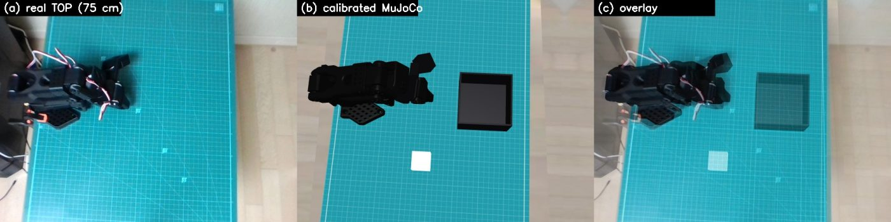
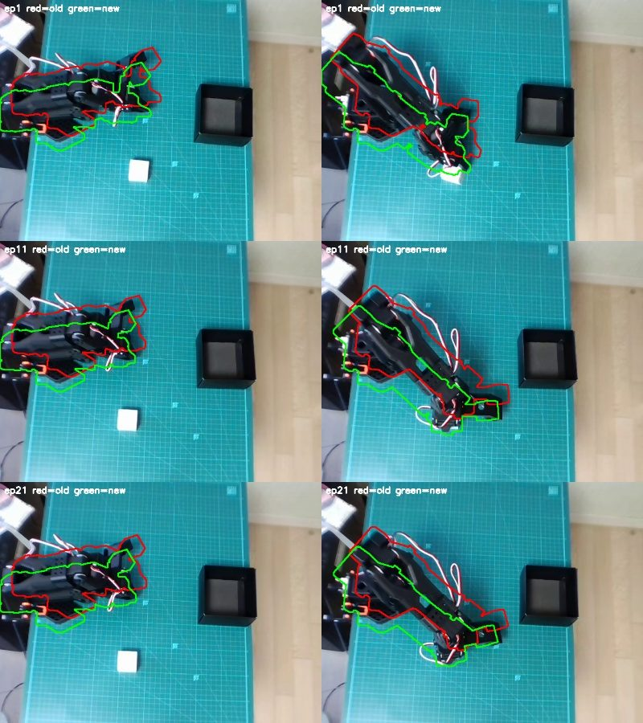
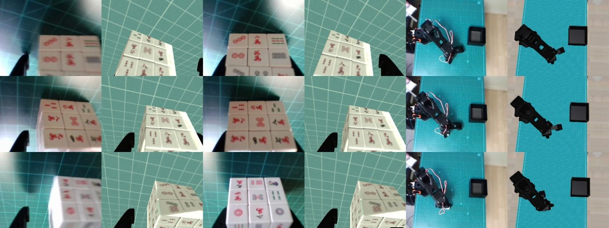
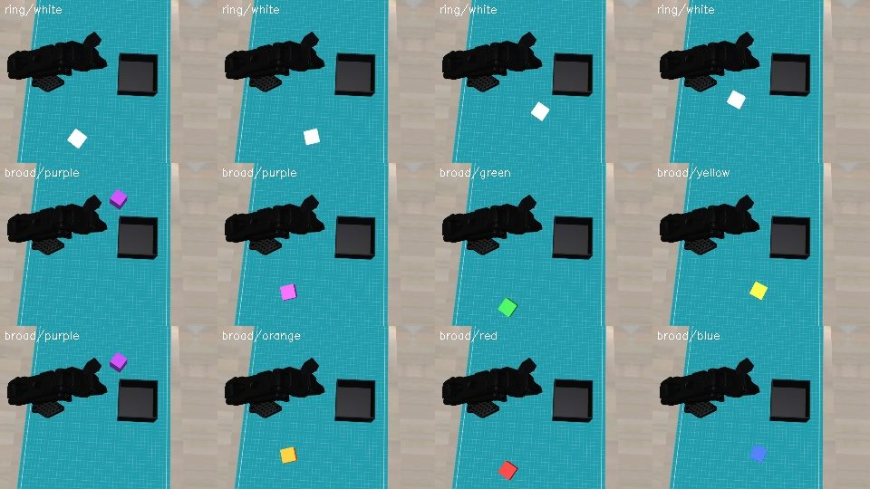
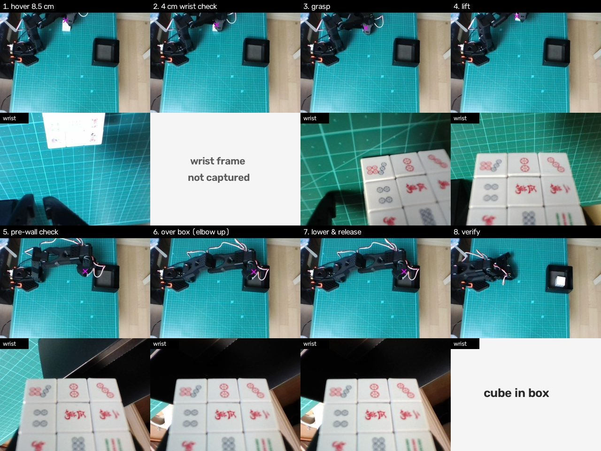
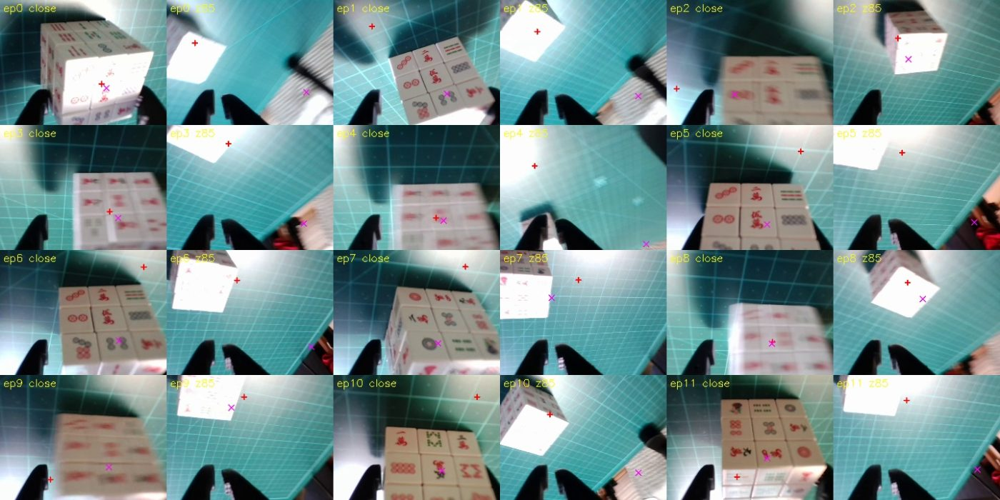
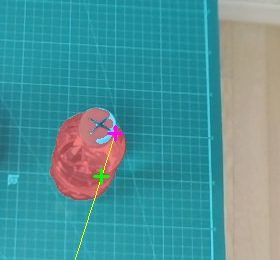
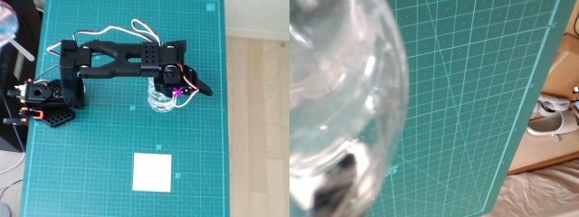
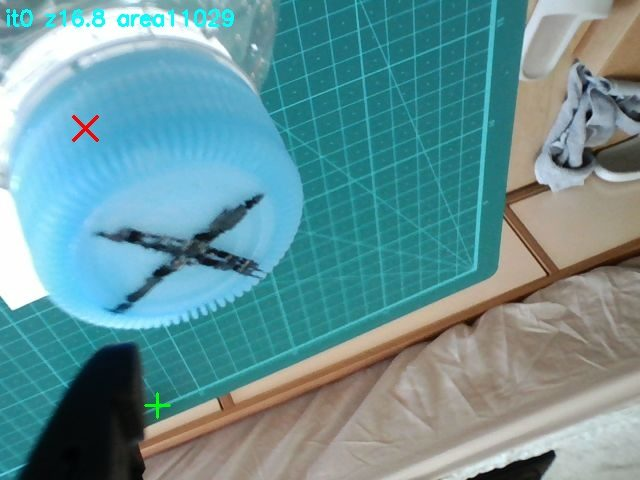

SO-101 Pick-and-Place: Sim-to-Real Experiments
Notes from a week of experiments: fine-tuning SmolVLA on a low-cost SO-101 arm, calibrating a MuJoCo twin to reduce position memorization, and trying an LLM agent that plans and verifies each step itself.
TL;DR
- SmolVLA fine-tuned on ~30 teleoperated demos reproduces smooth, human-like picks — but only where the demos were: 62% at the training spot, 4% once the cube moves 4–7 cm.
- A MuJoCo twin calibrated from the robot's own logs (camera, base pose, joint zeros, latency, cube texture) cuts the grasp-point error from 3.4 cm to 0.42 cm. Broad randomized demos + two DAgger rounds raise sim generalization from 4% to 63%. Flow-Noise PPO adds nothing measurable.
- Co-training real + sim data starts to transfer: the real arm picks a cube away from the demo spot. It still drifts toward the memorized spot.
- An agentic baseline (Claude: TOP-camera detection → calibrated twin → IK → step-by-step verification) places the cube in the box from unseen positions, but fails on an unfamiliar transparent bottle at the edge of the arm's reach.
Real-arm rollouts
Setup
| Robot | SO-ARM101 leader + follower, 6× Feetech STS3215, 5 V supply |
|---|---|
| Cameras | Top camera at 75 cm + wrist camera, 640×480 |
| Task | Pick a 3.5 cm mahjong-tile cube and place it in a 10×10×6.5 cm box |
| Policy | SmolVLA (450M); only the 100M action expert is trained, vision encoder frozen; 50-step chunks, 10 Euler denoising steps |
| Simulator | MuJoCo + Menagerie SO-101, calibrated to the real cell |
| Compute | One RTX 4060 Ti (8 GB). A 20k-step fine-tune takes ~80 min |
Part A · The problem: position memorization
With 31 teleoperated demos (all with the cube on one sticker), SmolVLA's trajectories and grasp timing look human. But the policy learns "go to that spot", not "go to the cube". Moving the cube a few centimetres off the sticker gives 0/4 picks on the real arm. In simulation, a model trained on 120 fixed-spot demos scores 0.62 at the spot and 0.04 when the cube is shifted 4–7 cm.
Real2Sim: a twin calibrated from the robot's own logs

| What | How | Result |
|---|---|---|
| Top camera | Mat + robot-silhouette IoU | Mat IoU 0.97 |
| Wrist camera | Gripper-jaw silhouette IoU | 0.63 → 0.83 |
| Joint zeros | Grasp-moment correspondences (fingertip ≈ detected cube), constrained by side photos and rest-pose table contact | Release-to-cup error 2.32 → 1.06 cm |
| Robot base pose | 31 grasp + 25 release correspondences: the base had shifted 3.4 cm relative to the camera | Grasp error 3.4 → 0.42 cm, release 2.4 → 1.2 cm |
| Latency | Replaying recorded leader commands | 4-frame effective delay (follower lags leader by 4 frames) |
| Appearance | Cube faces cropped from real wrist frames, perspective-corrected | Mahjong-tile cube texture |
| Scripted teacher | Tilted fingers, separate grasp / carry tilt, human-like speed & gripper aperture | Far box layout 3/20 → 19/20 |


Improving the policy in simulation
Five sim conditions with 100 episodes each: C1 training spot · C2 shifted 4–7 cm · C3 anywhere · C4 training spot, colored cube · C5 anywhere, colored cube. Generalization = mean of C2, C3, C5.
- Broad randomized demos (405 ep.): cube anywhere in reach, ±45° yaw, random colors, camera pose/FOV and appearance randomization.
- DAgger recovery demos: roll out the policy, snapshot states it actually visits, restore them and let the teacher finish. Each round re-trains from the base model.
- Flow-Noise PPO (following πRL): learnable Gaussian noise at each of SmolVLA's 10 denoising steps makes the chunk log-likelihood tractable. Only the action expert is updated, with per-dimension ratio clipping. Rendering only at chunk boundaries makes an episode 3.7 s instead of ~30 s.
| Model | C1 | C2 | C3 | C4 | C5 | Gen. |
|---|---|---|---|---|---|---|
| Fixed-spot demos (120 ep.)† | .62 | .04 | .06 | .58 | .02 | .04 |
| + broad randomized (405 ep.) | .22 | .26 | .34 | .38 | .48 | .36 |
| + DAgger round 1 (+72 ep.) | .45 | .47 | .43 | .52 | .46 | .45 |
| + DAgger round 2 (+50 ep.) | .48 | .64 | .57 | .67 | .67 | .63 |
| + Flow-Noise PPO (best of 60 it.) | .60 | .64 | .57 | .67 | .63 | .61 |
† 50 episodes per condition. PPO evaluation swung between 30% and 62% across iterations (±8 pp std over 40 episodes). The exploration noise had to be tiny (σ = 0.011; σ = 0.08 collapsed success to 2/24). A "re-train on own successes" loop made things worse (18 → 15 → 14 / 20), so we switched to DAgger.

Sim2Real: co-training on the real arm
| Model | Data | Real-arm observation |
|---|---|---|
| Real only | 31 real demos (cube within ~2 cm) | Clean trajectories and grasps at the training spot (~3–4 / 4 into the box); 0 / 4 elsewhere |
| Sim only (fixed spots) | 60 sim demos | Picks the real cube, but hesitates just before grasping |
| Real + sim (right region) | 31 real + 200 sim (cube randomized over a 11×13 cm region) | Off-spot pick and place succeeds (video above); still biased toward the memorized spot |
Real-arm trials are few (4 per condition) and should be read as qualitative. Real-arm evaluation uses synchronous inference; real-time chunking produced odd upward postures on our setup.
Part B · An agentic baseline: Claude drives the arm
Instead of a learned policy, an LLM agent (Claude) operates the same arm through code. It detects the cube in the top camera, back-projects it with the calibrated camera, plans with the simulator's IK, and executes in short segments. After each segment it stops and checks the top camera, the wrist camera and the measured joint angles before moving on.

- Top camera: detect cube and box → robot-frame coordinates (grasp-point error 0.42 cm after calibration).
- Rise straight up, move horizontally at a reachable height, descend vertically to 8.5 cm. Open the gripper only once above the cube.
- At 4 cm, compare real and simulated wrist views (logged as a sanity check).
- Descend to the cube centre and close. Grip reading ≈ 17 means "holding"; ≈ 1 means a miss.
- Lift, then stop 3 cm before the box wall and check that the hanging cube's bottom clears the rim by ≥ 1 cm.
- Raise the elbow and enter the box from above. Lower until the cube is 1.5 cm above the rim and release.
- Close the gripper, rise vertically, verify ≥ 3 cm clearance, retreat, then re-detect the box (including rotation) to judge success.
| Run | Position | Outcome | What it taught us |
|---|---|---|---|
| Open-loop replay | far left | miss | LeRobot's max_relative_target clips goals to the current pose, leaving the servo too little torque against gravity |
| 1 | far left (r = 26 cm) | pushed box | Joint-space interpolation from rest scrapes the table; plan up → across → down |
| 2–3 | far left | aborted | Absolute wrist-vs-sim matching diverges at hover height (true even for human demos) |
| 4 | training spot | held, not released | Over-strict release rule; constant full squeeze overloads the gripper servo |
| 5 | training spot | in box | The open gripper hooked the wall on the way out; close it before retreating |
| 6 | unseen left (16.5, 12.7) | in box | Elbow-up approach (a human tip) raised the over-box height from 8.8 to 11.9 cm |

Part C · Where the agent breaks: an unfamiliar bottle
Next task: pick a small transparent water bottle (blue cap marked with ×) and stand it on a white square. No sizes or distances were given; everything had to come from the cameras. The agent estimated height from a single top image using vanishing-point geometry: vertical edges converge toward the camera's nadir, so the bottle's base lies on the cap → vanishing-point line. It then probed for the cap top by descending until the measured joints stopped following the command, and finally tried wrist-camera visual servoing.



Result: 0 grasps in 7 runs (the bottle was never knocked over). The cap sat 14–16 cm high at 25–29 cm reach, right at the arm's limit: reaching it needs 16–24° wrist tilt, with 2–3 cm of sag the encoders don't see. The pieces that worked — touch probing via encoder lag, load-based lift test, contact-detected placement, wrist-camera cap detection — are in place for the next attempt.
Learned policy vs. agent
| SmolVLA (learned) | Claude (agentic) | |
|---|---|---|
| Strength | Smooth, fast, human-like grasp timing; learns fine visual alignment from data | Generalizes to unseen positions geometrically; verifies, recovers and explains each step |
| Weakness | Bound to the data's coverage (memorizes positions); hard to debug | Slow; every behavior is a hand-written rule, and a wrong rule fails outright; weak at fine visual alignment |
| Needs | Diverse data | Accurate calibration and an object model |
They are complementary. The agent's closed-loop picker can act as an autonomous real-world data generator: put the cube anywhere, keep the successful episodes as demos, and train the policy on positions no human demonstrated. For hard objects, a few human demos can teach the policy the "align by looking" skill, while the agent handles localization, safety checks and recovery.
Lessons learned
- Data coverage is the generalization range. Demos within 2 cm give a policy that works within 2 cm.
- Sim data helps only when the task definition matches. A box 6 cm off in sim made the real policy place short.
- Check for silent setup drift. Both a 3.4 cm base shift and a 6 cm box shift were found only through correspondences.
- Never calibrate from one cue alone. Grasp-only fitting found a +14° / −13° shoulder–elbow solution that broke every other piece of evidence.
- Log the physical outcome separately from the success criterion. 34 of 38 "failed" teacher demos had actually put the cube in the cup.
- Recovery data beats self-imitation. DAgger improved results; re-training on the policy's own successes degraded them.
- For direct control, move in Cartesian segments and verify with measured joints. Don't clip goals relative to the current pose. Account for the held object hanging below the fingertip.
- Human intuition transfers instantly to an agent. "Open only above the cube" and "raise the elbow before placing" each turned a failure into a success within one run.
What's next
- Use the closed-loop agent to collect diverse real demos automatically, then re-train SmolVLA.
- Co-train with both sim regions (left + right) and compare at matched real-arm positions.
- Bottle: fix the servo closing rule, try a side grasp of the body, and add a few human demos.